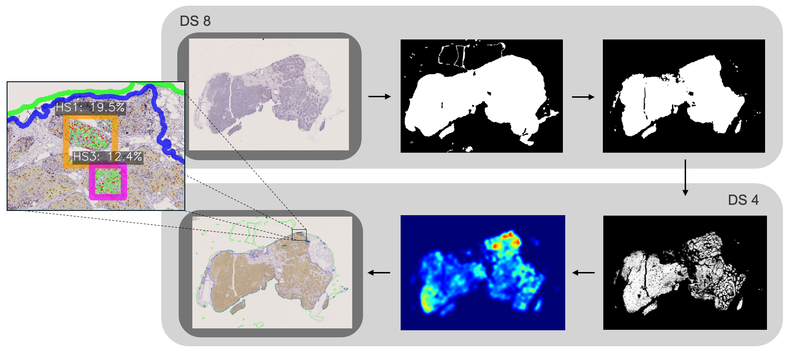

This page provides a brief overview of my master's thesis. It summarizes the main ideas at a high level and highlights the
skills and knowledge I developed throughout the project.
The thesis was written as part of the Computer Science program at the Norwegian University of Science and Technology (NTNU)
during the spring semester of 2025. It was supervised by Gabriel Hanssen Kiss and Frank Lindseth from the Department
of Computer Science, as well as by Henrik Sahlin Petterson from the Department of Clinical and Molecular Medicine. Their
feedback and guidance were very valuable and helped improve the quality of the work. The thesis received the grade A,
and the full report is available upon request.
The main goal of the thesis was to develop a fully automated system to measure the ratio of dividing cancer cells amongst
all cancer cells, and to identify the areas with the highest proliferation index in breast cancer biopsy images.
Breast cancer is the most common cancer among women, and accurate diagnosis is crucial for choosing the right treatment.
An important part of of the diagnostic process involves measuring how quickly the tumor cells are dividing, often evaluated
based on the presence of the Ki-67 protein. However, manually assessing tissue samples introduces practical and diagnostic
challenges. The analysis is time-consuming, depends on subjective judgment, and is becoming harder to
sustain due to increasing workloads and a shortage of trained pathologists. Automating this step could make the process
faster and more consistent, while maintaining the accuracy expected from expert pathologists.
The pipeline analyses the biopsy image in five main steps. The top-left image in the figure below represents the original input, and the five images that follow illustrate each step of the analysis described below.
The project is implemented in Python, with the following main libraries and tools:
The first experiments aimed to identify the best model for tumor region segmentation, followed by tumor cell segmentation.
Then, some of the hyperparameters were tuned to improve performance. The complete pipeline was tested on seven samples,
the results were reviewed, and adjustments were made before running the final experiment with the improved pipeline.
The final experiment shows that the pipeline accurately localizes hotspots but tends to underestimate the proliferation index.
All hotspots are correctly located within tumor regions, and for all samples except one, they align with pathologist annotations.
Predicted counts are closer to the pathologists measurements than in the first experiments, with a mean underestimation of 4.9
percentage points. Some weakly stained positive cells were still misclassified as negative, and not all tumor cells were successfully segmented
in the final analysis. The figure below shows the pathologist's hotspot markings in the top image and the pipeline's output in
the bottom image. The pipeline's proliferation index of 16.5% is consistent with the pathologists' assessments of 18%
and 21%.
This thesis demonstrates the feasibility of a fully automated pipeline for Ki-67 analysis by implementing an end-to-end proof-of-concept system. The pipeline can process entire slides and accurately locate hotspot regions similar to a pathologist. However, two main limitations remain: it consistently underestimates the proliferation index, and it was only tested on a small set of slides from a single institution. To address these issues, algorithmic improvements such as dynamic stain intensity thresholding could help ensure more Ki-67 positive cells are correctly identified, and the pipeline should be evaluated on a larger, more diverse set of slides to confirm its reliability before clinical use.